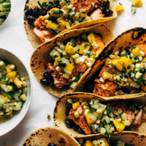

Salmon Tacos with Mango and Corn Salsa
Super easy salmon tacos loaded with a mango, sweet corn, and cucumber salsa! Perfect with black beans or avocado tucked into a corn tortilla.
INGREDIENTS
Salmon tacos:
- 1lb. salmon fillet (see notes)
- 2-3 teaspoons taco seasoning
- 2 teaspoons avocado oil
Mango Corn Salsa:
- 1 large mango, diced
- 1 cucumber, diced
- 2 ears sweet corn, kernels cut off the cob
- 1/4 cup finely chopped red onion
- 1/2 cup finely chopped cilantro
- 1 tablespoon honey
- zest and juice of 1 lime
- 1/2 teaspoon salt
Extras:
- one 14-ounce can refried beans , or regular black beans, or 2 avocados
- 8 corn corn tortillas
- 1/4 cup avocado oil for softening
INSTRUCTIONS
- Prep: Preheat the oven to 425 degrees. Line a baking sheet with parchment paper.
- Season the Salmon: Toss the salmon with the taco seasoning and avocado oil until well-coated - you can do this in a bowl or directly on the baking sheet. If your taco seasoning does not have salt, add some salt to the salmon.
- Bake the Salmon: Bake the salmon for 8 minutes, close to the top of the oven, or until it slips apart easily when pressed with a fork.
- Make the Salsa: While the salmon is baking, chop up your salsa ingredients and toss together in a bowl. Season to taste.
- Soften the tortillas: To soften the corn tortillas, I usually heat up some oil in a large skillet and then give the tortilla a very quick one-sided dip into the hot oil and transfer to a paper-towel lined plate. I stack them up as I go so the heat and oil kind of distributes between all the tortillas. You can also wrap the tortillas in a few damp paper towels and microwave for 30 seconds to steam them so they become more pliable and yummy to eat.
- Assemble the Tacos: Mash avocado or spread refried beans on the bottom of the tortilla. Add a couple pieces of salmon; press to gently smash them. Top with a big scoop of the salsa. I often finish these with lime squeezes and a drizzle of honey!